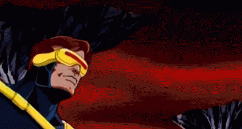

Austin's Comically Cosmic Snacks Austin's Comically Cosmic Snacks
Austin's Comically Cosmic Snacks Austin's Comically Cosmic SnacksAustin's Comically Cosmic Snacks will offer treats from beyond the cosmos! Themed after your favorite heroes, everyone will have a full stomach and a smile on their face!
Thank you all for visiting my page! My name is Austin Sheppard and I created this page because I confused myself into thinking we all needed to make a fake business for Unit 1.
I wanted to combine my favorite things which are food and characters from comics and games. I am truly a home-body person. I love to sit around and have game sessions for hours at a time. Talking to my friends in the chat while gaming
gives me the same satisfaction as going out and hanging with them somewhere else. I do try to mix it up by going out to play basketball, but since I moved back to town I haven't seen any of my friends because most of them have moved to other places.
So for now, chats keep us updated on each other's lives. The main genres of games I play are Fighting, Shooting, and RPG games. I play sports games occasionally, but only a few and very seldomly. I enjoy games that are in the sci-fi and fantasy realms the most
because it is something that can't be experienced in real life. Things like The Elder Scrolls, Divinity OS 2, Apex, Mortal Kombat, Call of Duty Zombies, and Smite are mostly in my recently played list. Though, I definitely mix it up often with other games to play with family and friends.
Another big interest of mine is to listen to podcast. I mainly enjoy The Breakfast Club which is a Rap/Hip Hop radio talk show that covers everything from political news to new music and more. They have new guests daily that provide information on a new album, medical news, national news,
or even just the latest hot topics on social media. Another podcast I listen to is Here's the Thing with comedian Kevonstage and actress Angel. Their content usually revolves around topics in the community and they give their take on things. Usually delivered in a funny manner that I enjoy.
The last main podcast I listen to is from Comics Explained. The host, Rob, usually dives into comics and talks about them as they are coming out and even goes back and does older stories to help give the foundational knowledge. What I really enjoy
about his podcast is that he helps people find a starting point in their area of interest, because the amount of options can be overwhelming to new viewers. He has started a very similar page called Geek Culture Explained which is very similar but covers more than comics. It goes into the
movies and games that are out and helps tie in content from different platforms to give the big picture. My favorite comic book character is Scott Summers aka Cyclops from the X-Men. So if you happen to see him worked into multiple assignments down the road, don't be surprised.
